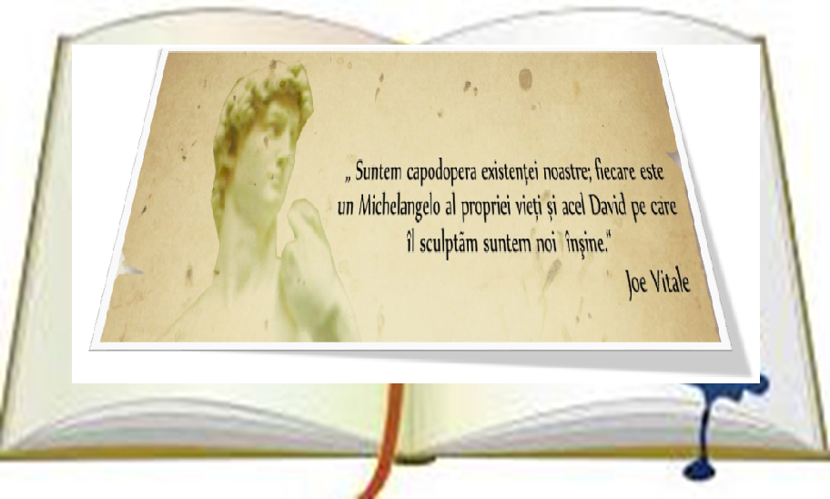

Toate cadrele didactice au parcurs materia ritmic în conformitate cu ceea ce și-au planificat, aplicându-se
metode şi procedee activ-participative, la fiecare disciplină de învăţământ, conform planificărilor
calendaristice proiectate.
Profesorii sunt centrati pe elevi în obţinerea performanţelor, în conformitate cu
Regulamentul de evaluare.
Directii de perspectiva pentru anul de studii 2020-2021
- Formarea si dezvoltarea competentelor digitale prin diverse platforme;
- Aplicarea diverselor metode și tehnici interdisciplinare si transdisciplinare in cadrul activitatilor
curricurale si extracurriculare;
- Formarea motivatiei continuă de practicare sistematica si independenta a culturii sănătății elevului și
deprinderii de a duce un mod sănătos de viata;
- Dezvoltarea creativitatii artistice prin diverse metode interactive;
- Perfectionarea cadrelor didactice prin diverse cursuri, seminare, platforme educationale.
- Dezvoltarea temei de cercetare conform regulamentului de atestare.
Motto-ul pentru anul de studii 2020-2021
